第1课时｜45分钟
女装设计 III · 第05周
第05周｜元素提取
元素提取不是复制图形，而是把证据变成可操作规则。
从第04周主题板中提取轮廓、线条、比例、色彩、材料与细节，并建立优先级。
观察 → 命名 → 抽象 → 规则化 → 元素库
Roksanda · 2026秋冬成衣同一系列 5套完整造型
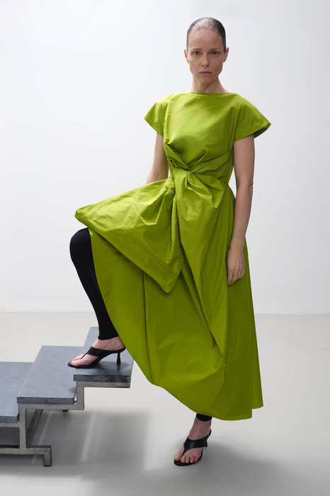
01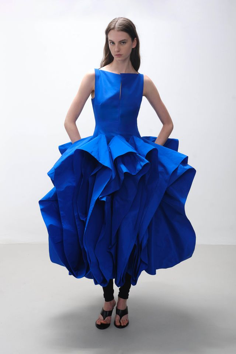
02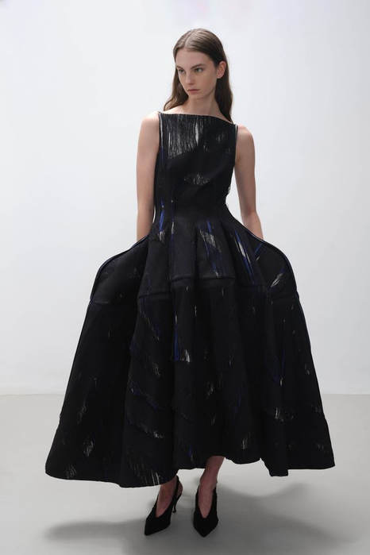
03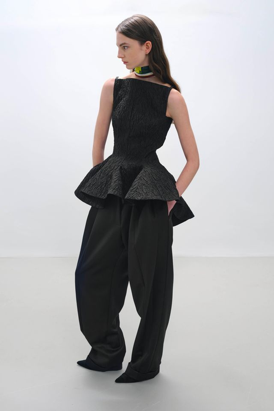
04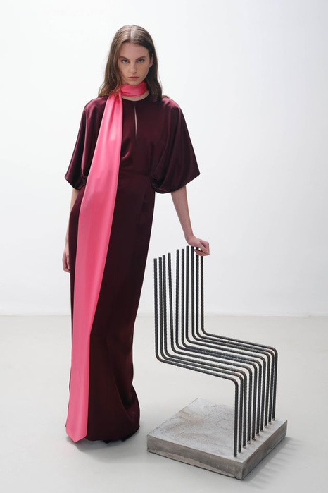
05Roksanda / Roksanda Ilinčić｜2026秋冬成衣｜来源：Vogue Runway
第1课时｜45分钟
女装设计 III · 第05周
02 课程位置
课程位置
只看本周与前后关系，先知道今天为什么要做元素库。
已完成｜01—04周从判断走到主题证据
美学与造型 → 穿着者与主题 → 主题板与设计任务书。
当前｜05—08周提取、变形、验证
05元素提取
06元素变形·分解板
07春夏系列策划 V1
08Gate 2：白坯样衣
后续｜09—16周深化与独立项目
春夏再编辑 → 秋冬系列 → 自定主题 → 最终系列、作品集与答辩。
第04周主题板是来源，第06周变形板是去向；元素库负责连接两者。
第1课时｜45分钟
女装设计 III · 第05周
第04周→本周
今天不从零开始——上周的任务书，已经写好了元素卡的前两栏
第04周回答“我承诺做什么”；本周回答“用哪些可重复的规则去做”。
上周任务书上的
今天变成
在哪一页用
45字概念句
元素卡的“核心规则”一栏
元素卡 2｜操作与变量
8—12张已编号资料
元素卡的“来源”一栏（编号＋局部）
元素卡 1｜来源与观察
设计任务书的“形”与“材”
六类观察中的廓形／线条／材料
六类观察角度
设计任务书的“验”
变量与失败条件
六类分析与分级
Gate 1 的可追溯／可操作／可变化
本周 Gate 的同名三条
修订与Gate
立场句第五次升级第04周“我的主题板证明 ______；因此任务书承诺通过 ______ 的形式规则” → 本周“我的核心元素来自 ______；生成规则是 ______；它可以通过 ______ 产生变化。”
开场 3 分钟摊开第04周带来的四样：主题板打印稿、带编号的设计任务书、8—12张已编号资料、描图纸与剪刀胶带 → 在任务书上圈出概念句，它就是今天第一张元素卡的核心规则 → 第04周一句话小结写的“要先提取 ______ 作为可变形的元素”，现在把那一项抄到卡片顶端。
第1课时｜45分钟
女装设计 III · 第05周
03 学习目标
今天要完成一套可继续变形的元素库
元素必须来自第04周主题板的证据，并能写成下一周可执行的动作。
第1课时节奏衔接与导入5′概念7′案例与方法12′卡片格式4′实操16′小结1′
01
观察
从资料中标出重复形式、身体位置与材料行为。
直接输出｜圈出至少3处可追溯证据02
命名
用准确名词、位置、方向和动词描述元素。
直接输出｜一条不依赖原图的描述句03
抽象
去除具体款式，保留比例、方向、连接和物理关系。
直接输出｜同一规则的3个不同变体04
分级
确定核心、辅助、语境与禁用元素，并说明理由。
直接输出｜核心2—3个，其余进入相应层级学情大二，已完成第01—04周，能交出主题板与八项设计任务书。当前三个普遍困难，本周“失败卡诊断”页已按 F1—F3 逐条给出修复方法：把“好看的形状”当成元素（F1 复制图形）、四级分层时全部标成核心（F2 没有优先级）、不定义变量轴因而无法转移到其他品类（F3 不能扩展）。 教学重点把证据写成“名词＋位置＋方向＋动作”的操作句，并给出至少3个只改一个变量的变体。 教学难点分级——判断“删除后身份是否改变”，从而决定什么才是核心。
第1课时｜45分钟
女装设计 III · 第05周
04 概念校正
复制“长相”，还是提取“生成规则”？
先看真实服装，再判断哪些信息能离开原图继续生成新的高级女装造型。
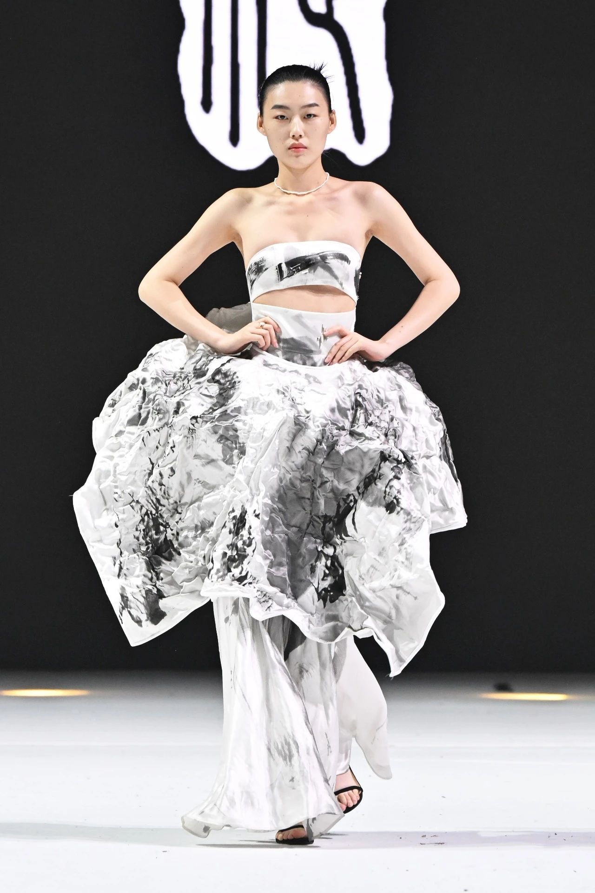
王清程《看似枯萎》｜北京服装学院毕业设计
将中国画笔势、材料骨架与表面肌理转译为服装关系
错误路径｜复制完整图形照搬这一套的蓬大裙形、黑白墨迹和完整搭配，只改变颜色、大小或位置。
01 方向笔势 → 斜向动势角度、起点和终点可以变化；“运动方向”保持可读。
02 结构骨架 → 离体支撑固定点、支撑范围和离体距离成为可调变量。
03 表面墨迹 → 疏密层次不用复制花纹，改用透明度、密度和边界变化。
04 身体体积 → 局部扩张肩、腰、髋或下摆可以轮换，身体关系仍然一致。
正确路径｜提取可操作关系用“方向＋固定点＋材料行为＋身体位置”写成规则，再改变尺度、位置与数量。
遮住照片后测试：能否用同一句规则生成3套不同造型？能，才是“元素提取”。
第1课时｜45分钟
女装设计 III · 第05周
05 高校学生案例
高校学生案例
东华大学肖宜昀《故乡痕迹》把调研对象转译为曲率、悬挂、层叠和色彩关系。
树枝弧度连续曲线／离体轮廓
许愿牌悬挂固定点／垂直方向
木雕与建筑层叠／边界转折
旧照片色调低饱和＋蓝紫强调
不是复制六套共享关系，不重复完整图形。
第1课时｜45分钟
女装设计 III · 第05周
06 六类观察角度
六类观察角度
统一使用六类：廓形、线条、比例、色彩、材料、细节。它们是观察角度，不等于都成为核心。
01廓形
身体距离、体量、长度。
肩部向外释放02线条
方向、连续、断裂。
斜线跨越中心03比例
上下、内外、局部尺度。
上窄下放 1:304色彩
主辅强调、面积、明度。
5%强调色05材料
重量、挺度、透明、弹性。
硬壳承托软层06细节
开口、连接、边缘、调节。
固定点重复 每类先找2—3项，再按证据强度与系列潜力筛选。
第1课时｜45分钟
女装设计 III · 第05周
07 过程证据
过程证据
研究、生成、选择与修订要按顺序留下痕迹。
01研究
编号资料，圈出身体位置和材料行为。
证据编号02生成
改变方向、位置和尺度。
3个变体03选择
按来源、身体与任务书筛选。
保留理由04修订
记录删除、降级和待测试。
下一步动作 只展示最后一张漂亮图，不能证明设计过程。
第1课时｜45分钟
女装设计 III · 第05周
08 元素卡 1｜来源与观察
元素卡 1｜来源与观察
先回答“我看见了什么”，不要直接跳到完整设计。

01 可见关系
横向肩面跨越身体；垂直主体形成窄长轴。
02 身体与方向
肩向两侧扩张，前身叠层错位，开口向下。
03 事实与推测
图像支持轮廓与叠层；版型、材料和工艺需测试。
课堂抽象，不代表品牌官方版型图。
来源：Issey Miyake 官方公开图像｜本页仅作“可见关系→身体与方向→事实与推测”的课堂观察
第1课时｜45分钟
女装设计 III · 第05周
09 元素卡 2｜操作与变量
元素卡 2｜操作与变量
用“名词＋位置＋方向＋动作＋关系”写操作句。
尺度×1.2／×1.6／×2.0
位置中心／偏左／偏右
数量2层／3层／4层
材料挺度／重量／透明度
不变项横向平面与垂直主体对照，并保留穿脱开口。
证据 → 关系 → 操作句 → 变量 → 不变项 → 待验证条件
第1课时｜45分钟
女装设计 III · 第05周
10 高校学生验证
高校学生验证
东华大学郭曼宜《1961》展示研究板、六套系列与成衣。
官方说明：黏土模型、建筑感线条。
硬朗结构与柔软负空间。
第1课时｜45分钟
女装设计 III · 第05周
11 六类分析与分级
六类分析与分级
六类观察保持一致；进入元素库时，再分核心、辅助、语境和禁用。
廓形｜核心离体弧面包围身体。
线条｜核心连续弧线与开口。
比例｜辅助放大体量对照窄主体。
色彩｜语境低饱和维持语气。
材料｜待验证硬结构×柔软负空间。
细节｜辅助／禁用单次出现先降级。
四级结果核心2—3｜辅助3—5｜语境｜禁用。删除后身份不变，就不是核心。
课堂反向分析，不宣称是作者本人或学校发布的分类结论。
第1课时｜45分钟
女装设计 III · 第05周
12 资料来源与伦理
资料来源与伦理
地方资料先记录来源、功能、使用者和意义边界，再提取形式规律。
完整检查表见“学生用元素库模板”页。
第1课时｜45分钟
女装设计 III · 第05周
13 第1课时实操
第1课时实操
16分钟：完成3张合格元素卡，先证明质量。
输出：3张元素卡＋1条核心规则。
第2课时｜45分钟
女装设计 III · 第05周
第2课时｜45分钟
从3张元素卡进入可编辑的元素系统
案例与方法9′ → 制作17′ → 同伴讲评9′ → 修订与Gate 6′ → 模板与总结4′
第2课时｜45分钟
女装设计 III · 第05周
15 高端女装条件
高端女装条件
高端女装不是“更华丽”，而是身体、结构、材料、制作与系列一致性都能被验证。
Issey Miyake · 2026秋冬成衣同一系列 5套对照
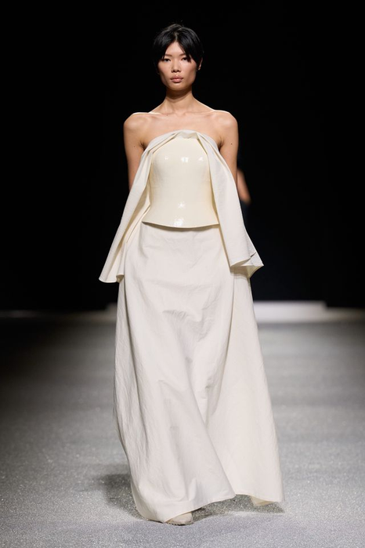
01 02
02 03
03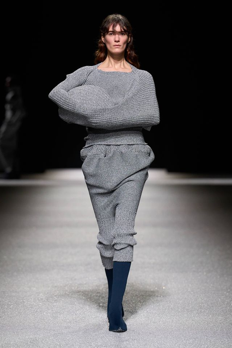
04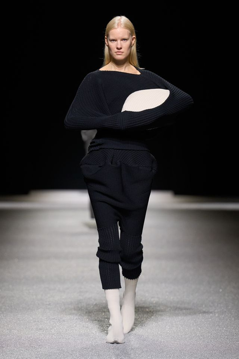
05身体关系围绕身体生长，保留动作。
结构控制体量、开口、支点可解释。
材料行为硬表面与软织物对照。
制作证据纸层、漆面、褶裥支持形态。
系列连续性弧面、错位跨套变化。
第2课时｜45分钟
女装设计 III · 第05周
16 替换案例｜高级定制
替换案例｜高级定制
Ashi Studio 2026秋冬高级定制比原The Garment更能说明结构、材料与工艺。
Ashi Studio · 2026秋冬高级定制同一系列 5套对照
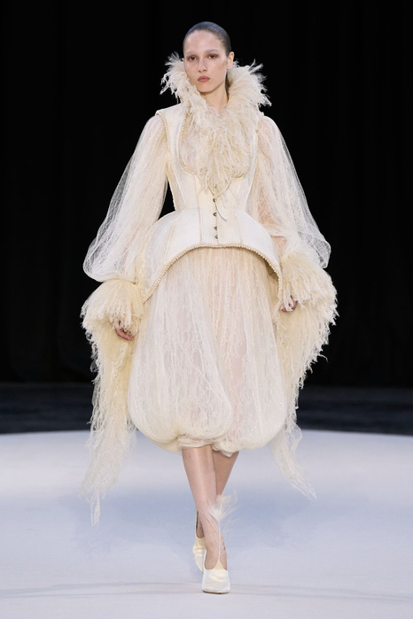
01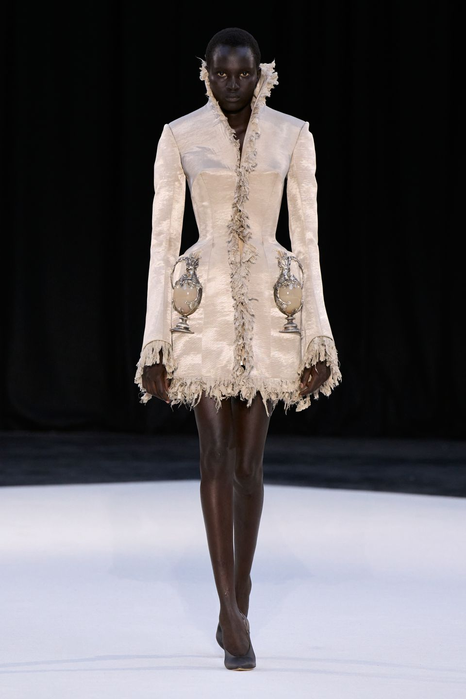
02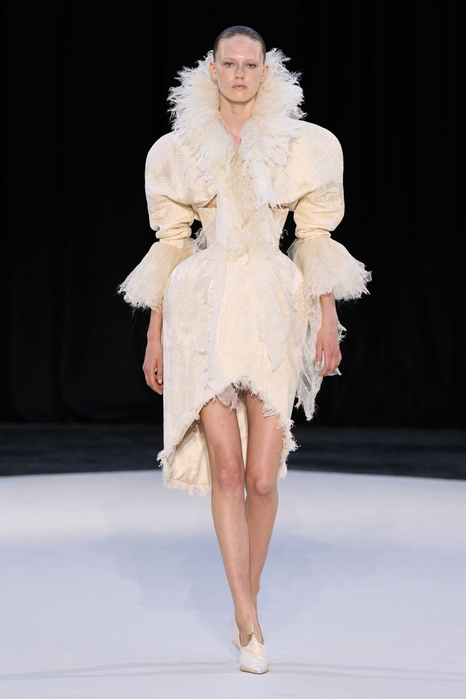
03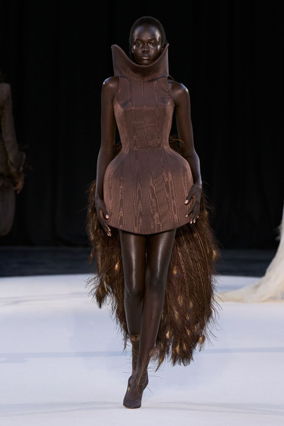
04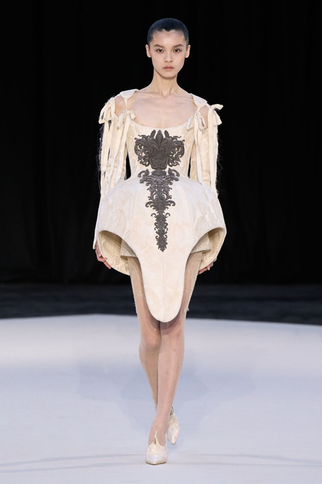
05硬壳漆面皮革界定边界。
雕塑比例肩腰臀局部放大。
软性边缘羽毛流苏向外释放。
工艺触点连接与边缘转折。
材料与工艺来自官方报道；“硬壳／释放”是课堂反向分析。
第2课时｜45分钟
女装设计 III · 第05周
17 张力元素
张力元素
Alaïa的“固定／伸展／释放”是教师分析框架，不是品牌官方术语。
Alaïa · 2026秋冬成衣同一系列 5套对照
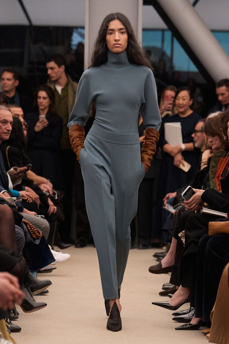
01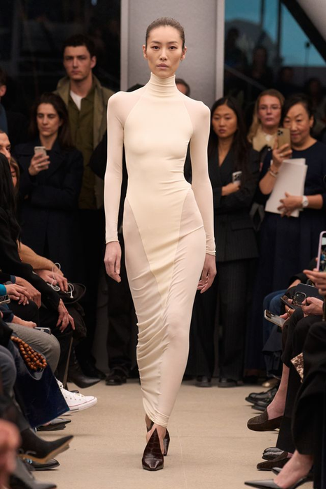
02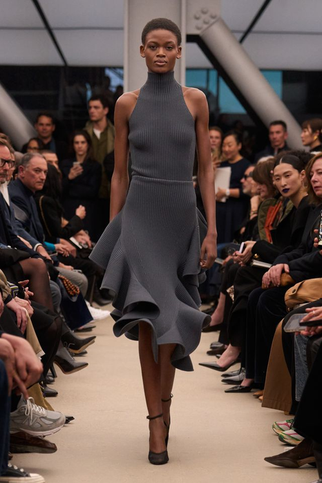
03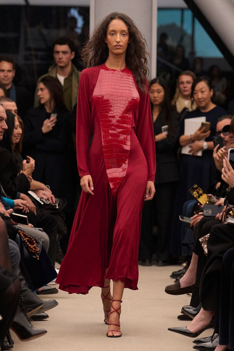
04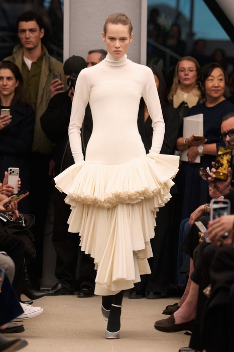
05固定肩、颈或腰建立支点。
伸展→释放沿躯干延展，在下摆释放。
先提出力的分区假设，再用样布、接缝与动作测试。
第2课时｜45分钟
女装设计 III · 第05周
18 材料验证｜高校课堂
材料验证｜高校课堂
秀场图只能提出假设；真实实验要改变一个变量、记录结果并写明失败条件。
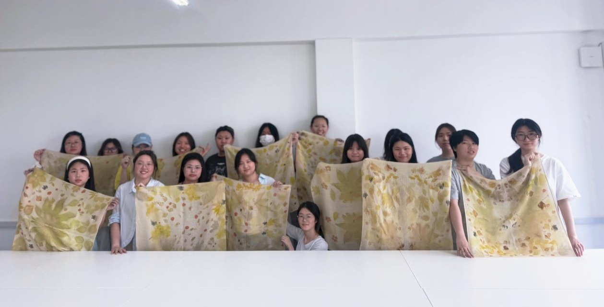
实际结果｜不同条件的转印差异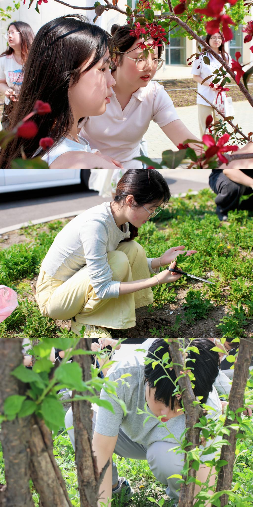
实际过程｜采集、筛选、准备材料厚度／含水量／色素
工艺温度／时间／压力
记录清晰度／色差／稳定性
规则句同一羊毛底布只改变压力，记录叶脉清晰度与色素扩散。
第2课时｜45分钟
女装设计 III · 第05周
19 设计师系列案例
设计师系列案例
Susan Fang上海2026秋冬通过层叠、悬挂、扩张与收束形成重复和微差。
Susan Fang · Shanghai Fall 2026同一系列 5套对照
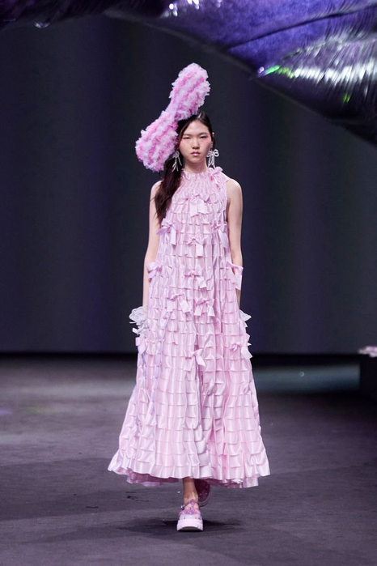
01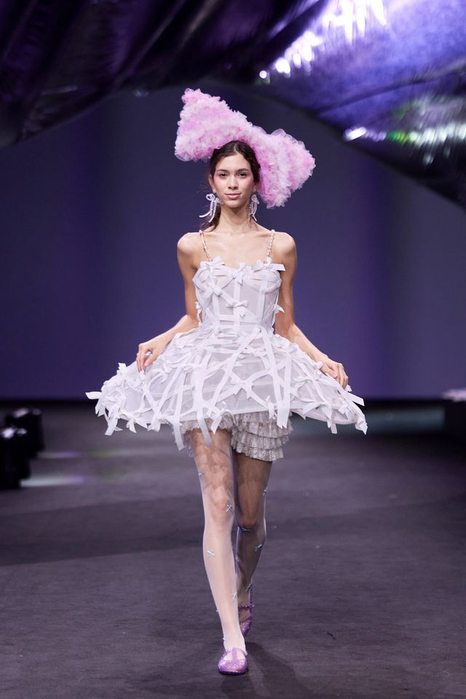
02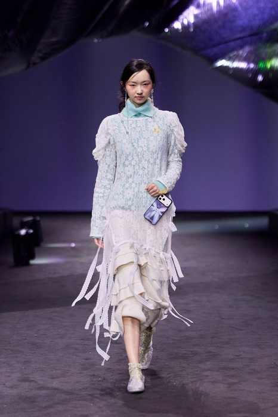
03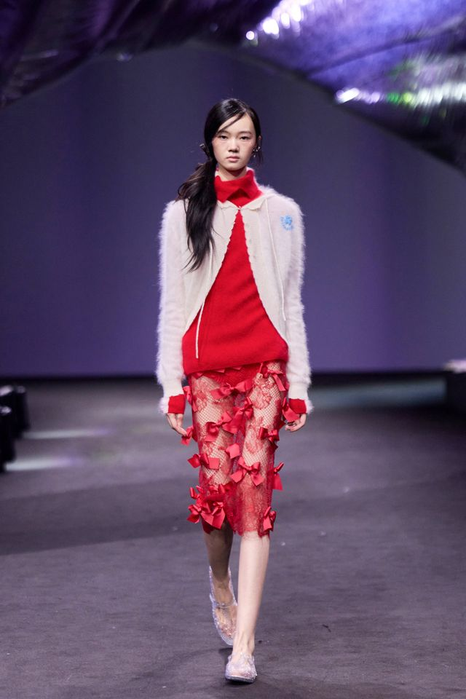
04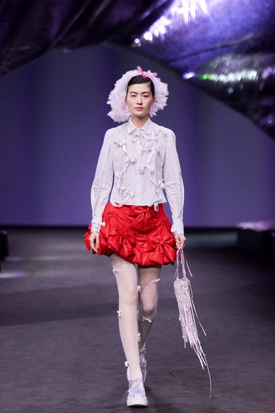
05核心｜层叠褶片与花瓣。
动作｜悬挂从肩胸向下。
变化扩张／收束。
语境透明与粉彩。
第2课时｜45分钟
女装设计 III · 第05周
20 失败卡诊断
失败卡诊断
先定位卡片中缺失的字段，再做最小修复；不要直接重画整套设计。
F1｜复制图形
来源传统花纹
观察像花，所以放大贴在肩部
操作放大
问题复制了外形，没有提取结构关系
不可进入造型生成
修复｜从图形改为关系
观察中心固定、四向展开、层层错位
操作悬挂 + 错位 + 重复
变量间距 / 长度 / 层数
验证至少生成3种肩部结构
关系可被系列化
F2｜没有优先级
核心纹样、颜色、材质、故事、轮廓全部保留
问题信息竞争，5套之间无法建立主线
结果每套都像不同主题
删减前不得进入系列
修复｜2 + 2 + 1 分级
核心展开关系 + 错位层次
辅助半透明材质 + 局部硬挺
语境低饱和色
验证遮住来源图仍能说出系列规则
主次关系清晰
F3｜不能扩展
操作只在一件礼服腰部做一次褶皱
变量未定义
问题无法转移到上装、裙装或外套
单件效果，不是系统
修复｜建立变量轴
位置肩 / 腰 / 下摆
尺度局部 / 半身 / 全身
数量1 / 3 / 连续重复
验证同一规则生成至少5套不同造型
可进入系列矩阵
F4｜脱离任务书
造型巨大硬质结构包围手臂
场景需要行走、抬臂、独立穿脱
问题视觉效果与穿着条件冲突
缺少身体测试
修复｜绑定身体条件
固定点肩点与侧腰两处
活动量抬臂90°不受阻
穿脱3分钟内独立完成
验证坯布样衣拍摄正 / 侧 / 动态
证据通过后保留
第2课时｜45分钟
女装设计 III · 第05周
21 第2课时实操
第2课时实操
17分钟：把3张卡扩展成可评审的最小系统，课后再补数量。
输出：6张元素卡＋层级表＋1条材料测试计划；课后补至8—10张。
第2课时｜45分钟
女装设计 III · 第05周
22 学生用元素库模板
学生用元素库模板
六栏表改为可打印、可填写的独立学生用模板。
编号／层级E-03｜核心
来源A-12 局部②
规则名词＋位置＋动作
应用身体／结构／材料
变化尺度／位置／数量
不变项身份条件
AI记录工具／提示／采用
版权作者／机构／日期
文化风险语境／禁用判断
《第05周 元素库记录表》
A4横向打印版：记录证据、规则、变量、不变项、AI使用与文化责任。
打开学生用模板第2课时｜45分钟
女装设计 III · 第05周
23 同伴讲评
同伴讲评
10分钟四人小组：每人1分钟说明＋1分钟反馈，另留2分钟换位与记录。
四人循环
01指出核心、来源、操作句。
02三人同时记录。
03只给一条可执行修改。
04圈两项修改和时间。
第2课时｜45分钟
女装设计 III · 第05周
24 修订与Gate
修订与Gate
8分钟不做全班逐人长讲评：先自检、互检，教师只处理高风险和边界案例。
0—2分钟｜自检给2张核心卡打勾，标缺证。
2—5分钟｜互检确认证据与变化。
5—8分钟｜教师抽检优先看风险卡。
可追溯编号＋局部。
可操作位置＋方向＋动作。
可变化3个变体保留身份。
两种判定
通过
至少2个核心满足标准。
修改后通过
写明补证动作与时间，课后上传复核。
课后查阅｜教学补充
女装设计 III · 第05周
25 补充案例｜广州美术学院
《碎瓷织序》：提取“工艺逻辑”，而不是粘贴瓷片纹样
林芝伊从潮汕嵌瓷中提取支撑、黏合与有序排布，把传统工艺关系转成服装结构和材料实验。
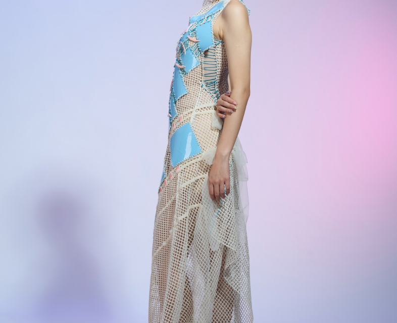
结构与表面局部
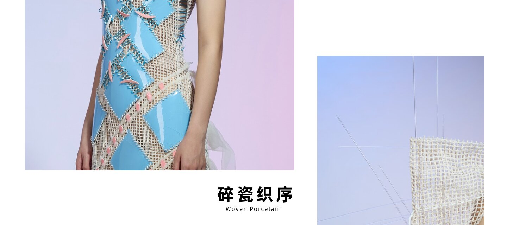
材料连接细节
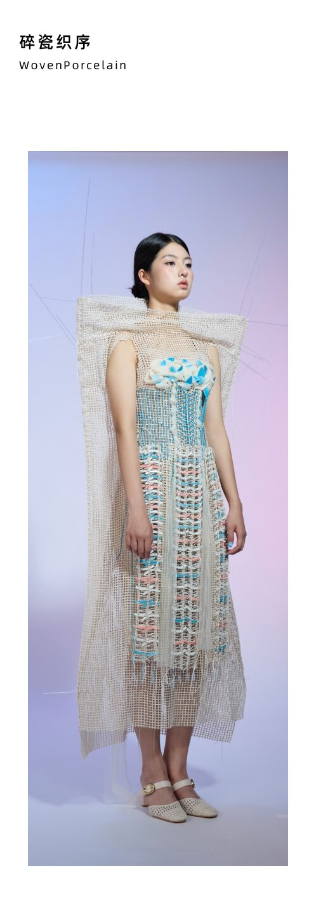
成衣验证 01（点击放大）
成衣验证 02（点击放大）
03
转译材料与结构
网格面料、手工编织、瓷片拼接与UV覆膜皮革。
04
验证视觉秩序
蓝、粉、白并置；硬片和柔性织物形成层次与张力。
复制直接印嵌瓷图案，或随机粘贴瓷片。
提取支撑—连接—排布成为可变化的系统。
课后查阅｜教学补充
女装设计 III · 第05周
26 AI协同边界
AI可以扩大候选，不可以替代来源判断
A0人工观察必须先于AI；所有建议都要回到原始证据，被保留、修改或否决。
A0｜人工观察给证据编号，先写身体位置、方向、重复关系与材料行为。
A1｜AI候选协助分类词汇、聚类相似关系，并提出尺度或位置变化。
A2｜回看原证据逐条检查候选是否能在图像、实物或调研记录中被指出。
A3｜人工决定说明保留、删除与修改理由，再确定层级和下一步验证。
可用分类线条、比例、材料词和细节动词。
词汇归类重复关系聚类参数候选
检查：每一项都能回到证据编号吗？
需说明生成抽象变体时保留提示、版本与筛选过程。
完整提示语版本对照保留／删除理由
检查：人工修改发生在哪里？
禁止复制文化纹样、品牌标识或编造不存在的证据。
文化纹样替换品牌标识挪用虚构来源与工艺
检查：是否制造了无法核验的事实？
提交记录工具、提示、采用内容与人工修改理由。
工具／模型输入与输出版本最终责任人
结论：AI只扩大候选，教师评价人工判断。
课后查阅｜教学补充
女装设计 III · 第05周
27 反例｜完整造型不可搬用
Miu Miu：不要把完整造型当成元素直接搬走
五套完整造型一起看，才能区分系列规则与某一套的偶然细节。
Miu Miu · 2026秋冬成衣同一系列 5套完整造型
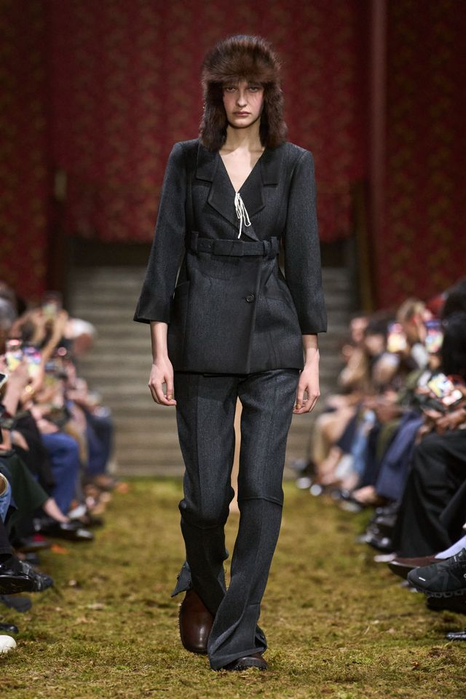
01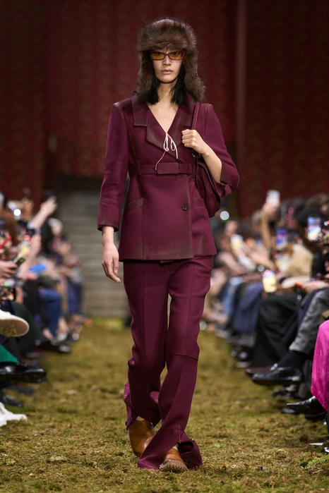
02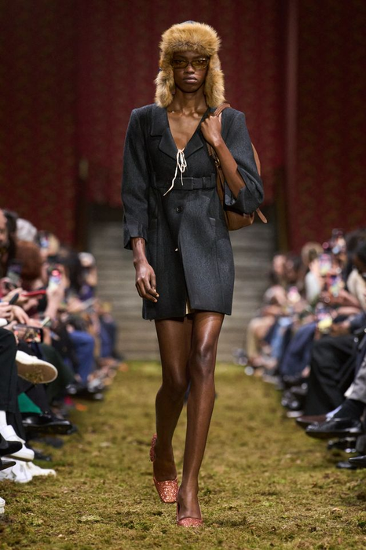
03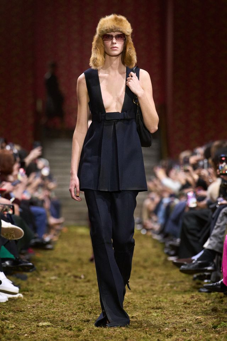
04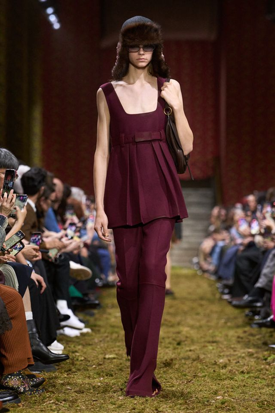
05圈出跨越至少三套的共同关系，才进入核心候选。
只出现一次的装饰先放入候选区，不把整套造型当作元素。
Miu Miu / Miuccia Prada｜2026秋冬成衣｜来源：Vogue Runway
课后查阅｜教学补充
女装设计 III · 第05周
28 基础标注练习
Toteme：同一系列中如何标注身体距离、主线与连接
本页五张均来自Toteme 2026秋冬成衣；每套只标三项，避免分析重新变成装饰。
Toteme · 2026秋冬成衣三项标注覆盖在图像上
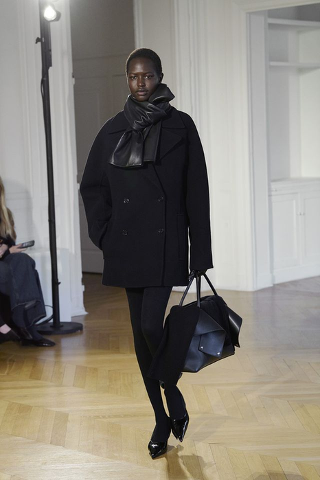
01离体纵向包围领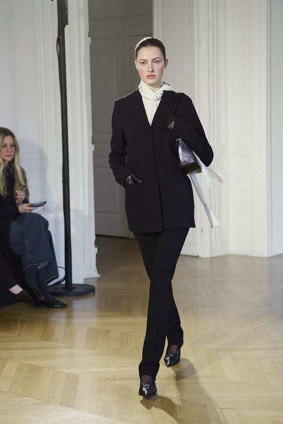
02顺体垂直前襟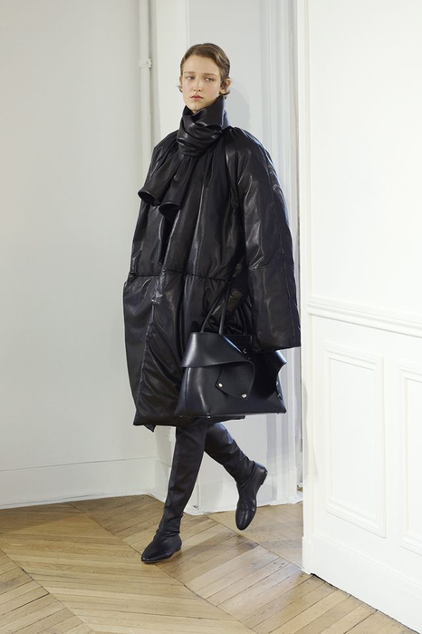
03离体斜向肩—侧缝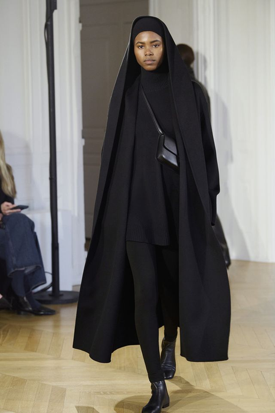
04贴体连续领—袖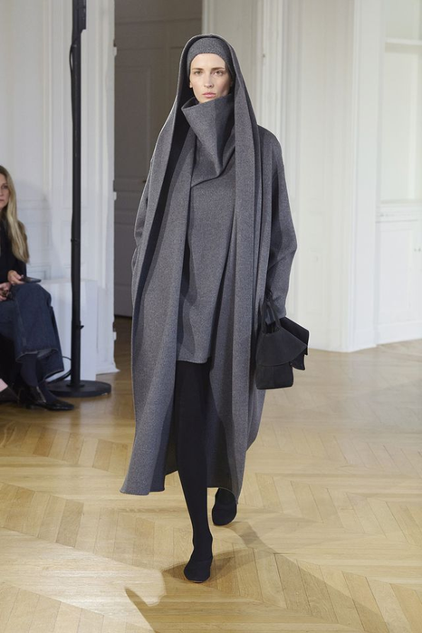
05离体垂坠前中开合先读身体距离，再找贯穿全身的主线方向。
最后确认线条在哪个结构或边缘发生连接。
Toteme / Elin Kling & Karl Lindman｜2026秋冬成衣｜来源：Vogue Runway
课后查阅｜教学补充
女装设计 III · 第05周
29 元素墙矩阵
Khaite：元素墙必须显示“哪一套用了什么”
五套均为Khaite Resort 2027；下方矩阵把重复与变化变成可检查的分布。
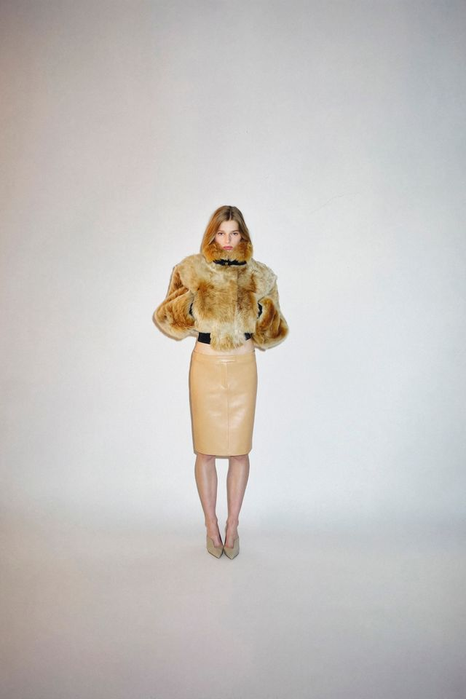
01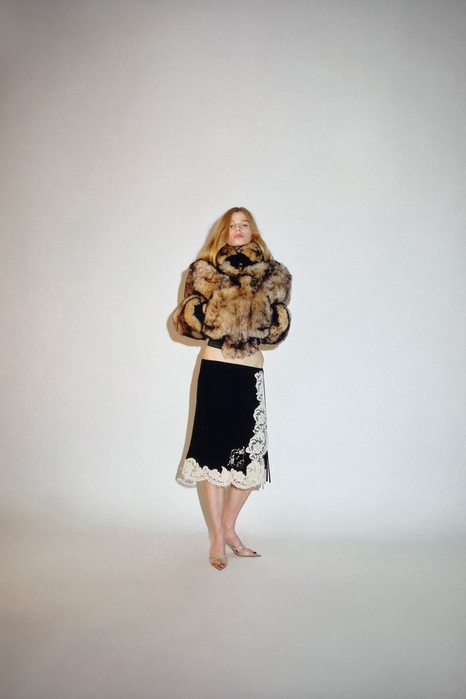
02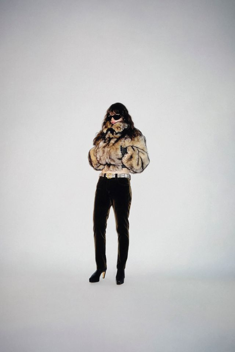
03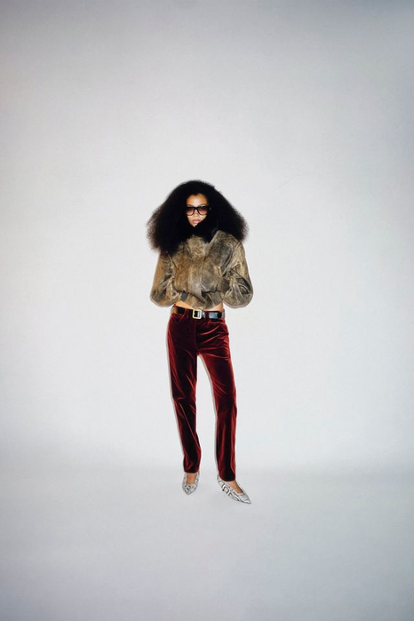
04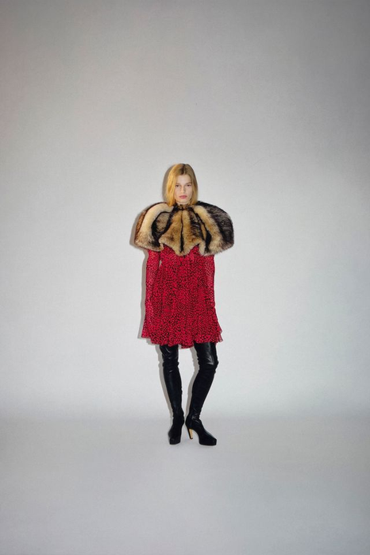
05元素／造型
01
02
03
04
05
核心｜肩部毛绒体积
●
●
●
●
●
辅助｜窄长下装
●
◐
●
●
◐
语境｜黑／米／酒红
◐
●
●
●
●
Khaite / Catherine Holstein｜Resort 2027｜来源：Vogue Runway ●明确使用 ◐弱化／变化
课后查阅｜教学补充
女装设计 III · 第05周
30 期末评价连接
本周成果将进入同一套六项终期评价
平时训练不是零散作业，而是期末系列的证据积累；本页依据《25级〈女装设计〉考核大纲》期末实践考试评分标准（满分100分）。
10分
时代性与创意
主题回应当下，并形成自己的问题与立场。
10分
趋势性与元素
提炼的设计元素与当季趋势、审美和来源一致。
20分
当代女性适配
款式回应身体、动作、场景与真实穿着需求。
20分
整体造型美感
比例、色彩、材料与细节共同形成完整造型。
20分
市场与定位
顾客、价格、品类和使用情境边界清楚。
20分
统一与丰富
风格统一，同时具有角色、搭配与造型变化。
第2课时｜45分钟
女装设计 III · 第05周
31 第05周总结
元素不是一张图，而是一套可以继续生成的规则
本周完成了“证据 → 观察 → 抽象 → 分级 → 验证”的元素库闭环。
01 EVIDENCE证据可追溯
每张卡都有来源编号、局部位置与使用语境。
02 LENSES六类观察
轮廓、结构、线条、细节、材料、色彩分别判断。
03 SYSTEM四级分层
核心／辅助／语境／禁用，避免所有元素同时发声。
04 TEST规则可验证
至少3个变体，并写清变量、不变项和失败条件。
本周提交
01课堂完成6张元素卡，课后补至8—10张。
02四级层级表＋来源编号＋AI使用记录。
032张核心卡各写两条不变条件。
进入第06周前的 Gate
✓遮住原图，仍能说出生成规则。
✓同一规则至少产生3个不同结果。
✓文化来源、材料风险和失败条件可说明。
一句话小结：“我的核心元素来自 ______；生成规则是 ______；它可以通过 ______ 产生变化。第06周我要先改变 ______，同时保持 ______ 不变。”
课程连接
女装设计 III · 第05周 → 第06周
32 第06周预告
下一周：把元素库变成可比较的变形家族
第05周回答“提取什么”；第06周回答“如何有规则地改变它”。
本周带走2张核心元素卡＋层级表＋来源编号＋两条不变条件。
下周完成一张可比较的变形·分解板；每个结果都记录改变了什么、保留了什么。
12
二维变体
同一A5尺度并列比较。
- A组：4个尺度·方向
- B组：4个切分·重组
- C组：4个重复·错位
10′确认规则与不变项
20′完成12个二维变体
15′编号并横向比较
20′三维材料测试
15′形成3个家族
10′讲评与Gate
下周携带：2张核心元素卡／描图纸与A3底板／剪刀与胶／基础坯布或候选材料。